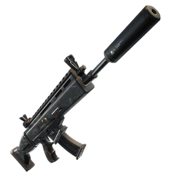
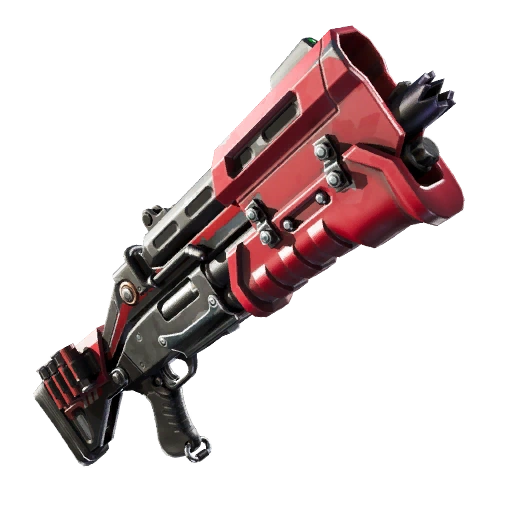
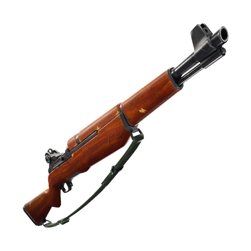
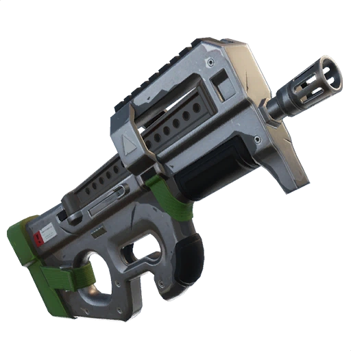
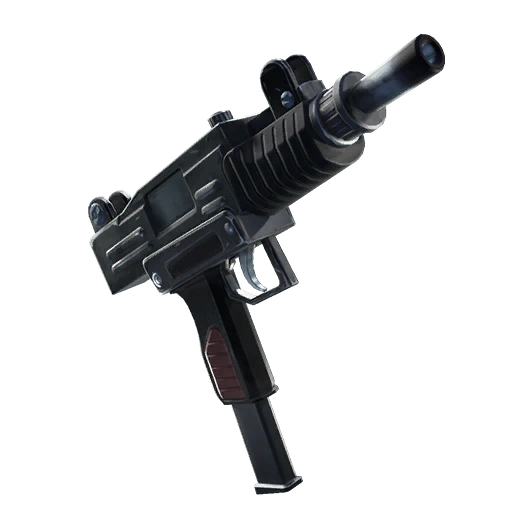
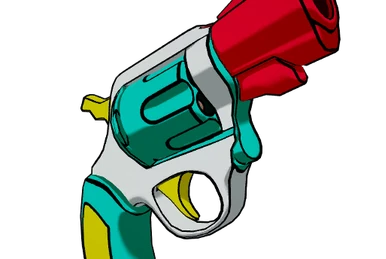
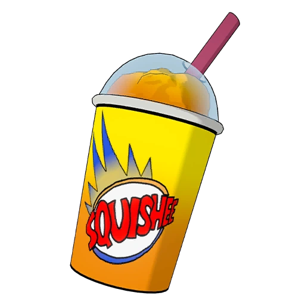

Beschreibung des Drops:
Der gezeigte Ort ist eine kleine Küsten-Location mit einer Mischung aus Straße, Parkplatz, Gebäude und Hafenplattform.
Er ist ideal für Solo- oder Duo-Looting, da er kompakt ist, aber viele Spawns bietet.
Aufbau & Gelände:
Die Area besteht aus einem oberen Straßenbereich, einem Bus und einer unteren Hafen- bzw. Pier-Plattform,
die ins Wasser ragt. Es gibt sowohl geschlossene Räume als auch offene Bereiche am Wasser.
Oberer Bereich – Straße & Parkplatz
Oben verläuft eine Hauptstraße, neben der ein Bus steht.
Direkt darunter befindet sich ein Parkplatz mit einem Fahrzeug, mehreren Kisten und möglichen Boden-Loot-Spawns.
Dieser Bereich eignet sich für sehr schnelles Looting beim frühen Landen.
Mittleres Gebäude – Haupthaus:
Das Gebäude hat mehrere verbundene Räume mit zahlreichen Truhen-Spawns und Bodenitems.
Viele Loot-Spawns liegen dicht beieinander, wodurch man schnell mehrere Waffen und Ausrüstungen sammeln kann.
Unterer Bereich – Hafen / Pier:
Unten ragt eine Holz-/Betonplattform ins Wasser.
Auf der Plattform sind mehrere Loot-Kisten, Bodenitems, Mülltonnen und Container verteilt.
Der Bereich ist loot-reich, aber offen, daher sollte man auf gegnerische Sichtlinien achten.
Loot-Qualität & Anzahl:
Auf der Karte sind viele Truhen wie aber auch Burger spawns und Slurpfässer und Boden-Lootpunkte zu sehen,
insgesamt mehrere Truhen und zahlreiche Boden-Spawns. Der Drop bietet insgesamt mehr Loot, als die kompakte Größe vermuten lässt.
Stärken dieses Drops:
Sehr viel Loot auf engem Raum; häufig wenig Contest;
gute schnelle Rotation über die Straße oder per Jumppad möglich; ausgewogene Mischung aus Indoor- und Outdoor-Loot.
Schwächen:
Der untere Pier ist relativ offen und leicht einsehbar,
weshalb man dort schnell von Gegnern beschossen werden kann.
Wenn mehrere Teams landen, kann es aufgrund der Enge sehr hektisch werden.
Was ist überhaupt Fortnite?
Fortnite ist ein populäres Videospiel, in dem viele Spieler gleichzeitig auf einer Insel um den Sieg kämpfen.
Im Mittelpunkt steht der Battle-Royale-Modus, bei dem am Ende nur eine Person oder ein Team übrig bleibt.
Typisch ist das Bauen von Wänden und Rampen sowie das Sammeln von Waffen und Materialien. Außerdem gibt es kreative Spielwelten und regelmäßig neue Inhalte und Events.
Was sind überhaupt die Simpsons?
Die Simpsons ist eine berühmte US-Zeichentrickserie, die das alltägliche, oft verrückte Leben der Familie Simpson erzählt.
Hauptfiguren sind die Eltern: Homer und Marge, sowie ihre drei Kinder Bart, Lisa und Maggie.
Die Serie nutzt Humor und Satire, um gesellschaftliche Themen und Popkultur aufzugreifen.
Seit 1989 läuft sie im Fernsehen und gehört zu den bekanntesten Serien weltweit.
Was macht die Simpsons-Season so besonders?
Die Simpsons-Season in Fortnite stach hervor, da die Insel in die Stadt Springfield aus der Serie verwandelt wurde.
Spieler konnten bekannte Orte wie Moe’s Tavern oder das Haus der Simpsons erkunden. Zudem waren viele beliebte Charaktere als spielbare Skins verfügbar.
Neue Gegenstände und Spielmechaniken orientierten sich direkt an der Serie, so entstand ein besonderes Event, das Fortnite-Action und Simpsons-Nostalgie miteinander verband.
Was ist der beste Loot der Simpsons Season?
- Oder die Infantry Rifle: Hohe Präzision und starker Schaden bei Headshots
- Thunder Shotgun: Schrotflinte mit hohem Schaden, geeignet für aggressive Nahkämpfe oder plötzliche Fights.
Heilung und Mobilität
- Krusty Burger: schnell einsetzbar, regeneriert Health/Shields, besonders praktisch im Endgame.
- Chug Jug: Starke Heilung bzw. Schildregeneration, sehr gut wenn man gerade auf einem Fight gekommen ist und es heilt einen in 10ner Schritten auf 200 Health.
Mobilät-Items:
Blincky Fish- gut geeignet zur Rotation im Endgame oder wenn man vor Fights wegrennen muss.
Außerdem sind sie sehr wertvoll und der Blincky Fish kann einem dem Sieg schenken.
Was ist jetzt also der beste Loot ?
für aggressive Fights sind die Thunder Shotgun + Mr Blasty gut.
für mittlere bis lange Distanzen und kontrollierte Fights sind die Infantry Rifle + Heal Items am besten geeeignet.
Was sind die besten Skins der Simpsons Season?
Battlepass und bekannte Skins sind:
Homer Simpson und Evil Homer (also die böse Version von Homer),
Marge Simpson und die Witch Mrage (also als Hexe verkleidet),
Ned Flanders/Stupid Sexy Flanders und dann der Blinky Fishstick und der Springfielder Peely
Warum sind die Skins so beliebt?
für viele Spieler eine Verbindung und Erinnerungen an die Serie
Es ist sehr vielseitig und es gibt viele Style-Alternativen und viele Optionen für die Skins,
z.B der „Peely Fishstick“ und der „Evil Homer“, sowie „Witch Marge“ oder „Stupid Sexy Flanders“
Was sind die besten Orte in der Season?
-Evergreen Terrace: Es ist ein typisches Wohnviertel mit dem bekannten Simpsons Haus- also ideal für Fans und gleichzeitig gibt es dort sehr viel Loot
-Burns Manor : Es ist ein großes Herrenhaus mit sehr viel Platz innen und außen- dort gibt es ebenfalls sehr viel guten Loot. Außerdem ist dieser Ort gut für Spieler die etwas strategischer spielen wollen und nicht so viel in Kämpfe gehen wollen.
-Donut District: Es ist ein spezieller Ort mit ikonischen Simpsons-Elementen, wie z.B. Lard Lad Statue. Dort zu kämpfen ist riskanter als in einem Wohnviertel, weil dort alles offen ist und es kaum Chancen gibt, sich zu verstecken.
| Legendäre Waffen | Aussehen | Schaden | Infos |
|---|---|---|---|
| Striker AR |  |
24 | Sturmgewehr, Magazin: 25 |
| Thunder Pump |  |
92 | Schrotflinte, Magazin: 8 |
| Silent Scar |  | 35 | Sturmgewehr, Magazin: 30 |
| Tactical Shotgun |  | 84 | Schrotflinte, Magazin: 8 |
| Infantery Rifle |  | 46 | Sturmgewehr, Magazin: 8 |
| p90 |  | 22 | Maschiengewehr, Magazin: 35 |
| Uzi |  | 22 | Maschiengewehr, Magazin: 25 |
| Silent Pistol |  |
23 | Pistole, Magazin: 27 |
| Mr. Blasty Revolver |  | 67 | Pistole, Magazin: 6 |
{kind=link}
| Item | Aussehen | Leben oder Schild | Heilung | Extras, stack |
|---|---|---|---|---|
| Tomaten |  |
Leben | 10/Tomate | Werfbar, 15 stackbar |
| Blinky Fisch |  |
Leben | 15 | Schwerelosigkeits Effekt, 3 stackbar |
| Chug Splash |  |
Beides | 20/Chug | Werfbar, 6 stackbar |
| Super Squishee |  | Leben | 20/Squishee | Unendlich Ausdauer Effekt, 3 stackbar |
| Chug Jug |  |
Beides | 10/sek (insgesamt 200) | Kann das meißte Leben wieder her stellen, 1 stackbar |
| Medkit |  |
Leben | 100 | 3 stackbar |
| Minis/kleiner Schildtrank |  |
Schild | 25/mini | 6 stackbar |
| Biggi/großer Schildtrank |  |
Schild | 50/Biggi | 3 stackbar |
| Bandage |  |
Leben | 15/Bandage | 15 stackbar |